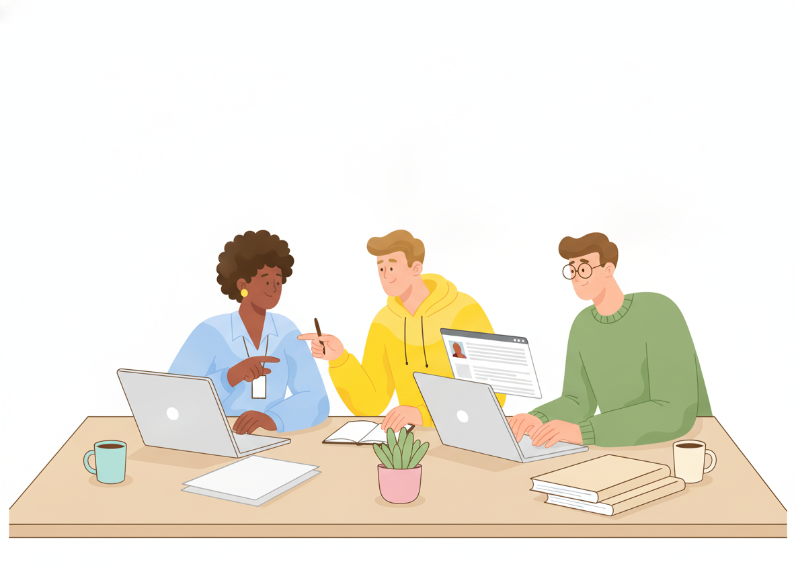
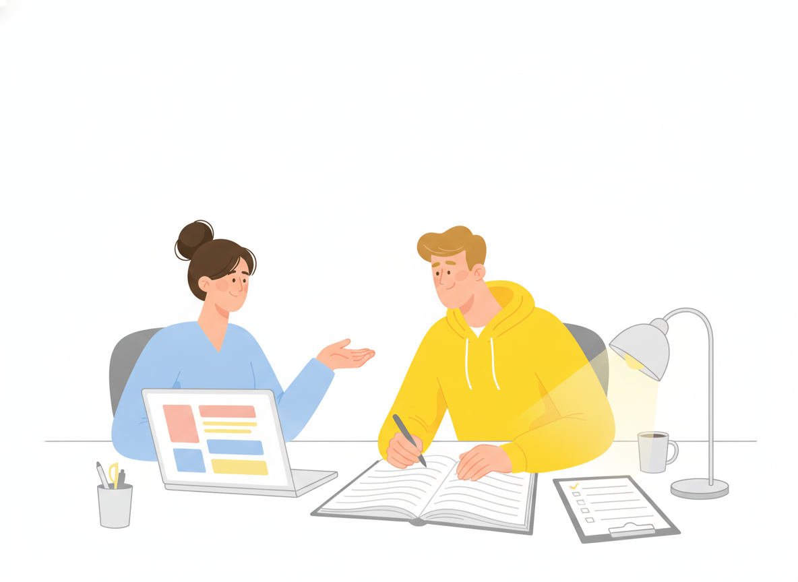

Tacit Knowledge: How to Capture What Your Team Knows but Never Writes Down
Every team has one person everyone asks. They know which customer setting causes the strange error. They know the quick check that saves an hour. None of it is written down. When that person is on vacation, work slows. When they leave, some of it is gone for good.
That know-how is tacit knowledge. This guide explains what it is, how it differs from explicit knowledge, and gives you a practical, seven-step way to turn more of it into documentation your team can use.

What is tacit knowledge?
Tacit knowledge is the skill, judgment, and experience people carry in their heads but find hard to put into words. It is learned by doing, it depends on context, and the people who hold it often don't notice they have it.
The idea comes from the scientist and philosopher Michael Polanyi. In The Tacit Dimension (1966), he summed it up in one line: "we can know more than we can tell." His classic example is a face. You can recognize a friend's face among thousands, yet you would struggle to explain exactly how you do it.
At work, the same thing happens. An experienced engineer "just knows" a deployment looks wrong. A support lead can tell from two sentences whether a ticket is a bug or a training issue. They are right most of the time, but if you ask them to explain, they pause.
Tacit vs explicit knowledge
The easiest way to understand tacit knowledge is to compare it with its opposite.
Explicit knowledge is knowledge that has already been written down or recorded. You can store it, share it, and use it without the original expert in the room. A product manual, a price list, and a password-reset procedure are all explicit knowledge.
Tacit knowledge lives in people. It is personal and tied to context, and it usually moves between people through working side by side, shared experience, and trust.
Here is the difference in practice:
| Explicit knowledge | Tacit knowledge | |
|---|---|---|
| Where it lives | Documents, systems, databases | People's heads and habits |
| How it's shared | Reading, searching, linking | Watching, asking, doing together |
| How it's learned | Quickly, by reading | Slowly, through experience |
| What happens when someone leaves | It stays | It often leaves with them |
| Example | "Click Settings → Reset" | Knowing when a reset will make things worse |
Explicit and tacit knowledge are not rivals. Most useful documentation is explicit knowledge that started out tacit. Someone noticed a pattern, explained it, and wrote it down.
Tacit knowledge examples at work
Tacit knowledge shows up in every department. A few common examples:
- Customer support: knowing which questions really mean "the onboarding email confused me," and which phrasing calms an upset customer.
- IT and operations: knowing which alerts are noise, which server to check first, and the unofficial order of steps that actually works during an outage.
- Product teams: knowing why a feature was built a certain way, and which earlier ideas customers rejected.
- Sales and success: knowing which accounts need a phone call instead of an email, and what a "maybe" from a certain buyer really means.
- Compliance and finance: knowing which edge cases auditors always ask about, and where the official policy needs extra explanation.
Researchers Dorothy Leonard and Walter Swap call the most valuable form of this experience "deep smarts." In their Harvard Business Review article, they describe it as "the stuff that produces that mysterious quality, good judgment." They also note that this insight is based more on know-how than on facts. That is exactly why it rarely ends up in a document by accident.
Why tacit knowledge walks out the door
Explicit knowledge stays when people leave. Tacit knowledge usually doesn't.
A 2024 study in the SA Journal of Human Resource Management looked at knowledge loss in South African state-owned enterprises. The researchers interviewed 20 HR managers, analyzed annual reports, and surveyed 145 respondents. They found that tacit knowledge loss was driven mainly by voluntary and involuntary employee turnover, combined with a lack of retention strategies. Their conclusion: organizations need to treat knowledge as a strategic issue, not an afterthought.
You don't need a research study to see this in your own team. Look for these warning signs:
- One person answers the same questions in chat every week.
- New hires take months to get confident, even with good onboarding.
- Projects stall when a specific colleague is out.
- People say "ask Sam" instead of "check the docs."
Each one is a sign that important knowledge lives only in people.
How to capture tacit knowledge: a 7-step method
You can't write down everything a person knows. Some skills only come with practice. But you can capture far more than most teams do. This is the method we recommend.

1. Find the knowledge that would hurt most to lose
Start with risk, not with people. Ask: "If this person left tomorrow, what would break or slow down?" List the tasks, decisions, and customer situations that only one or two people handle well. These are your first targets.
2. Identify who holds it
For each item on the list, name the people who know it best. Often it's not the most senior person. It's the one who has done the task most often, or who handles the strange cases.
3. Watch the work, don't just ask about it
When people explain a task from memory, they can skip the small checks that have become automatic for them. That's the "know more than we can tell" problem in action. Sit with them while they do the task, or record a screen-share where they talk through it out loud. You'll see the shortcuts and judgment calls that never come up in a conversation.
4. Ask about decisions and exceptions
The most valuable knowledge hides in the "it depends." Good questions include:
- "How do you know when this is going wrong?"
- "What do you check first, and why?"
- "When would you not follow the usual steps?"
- "What mistake do new people usually make here?"
Stories work well too. Ask for the last time something went badly and what they did. A story carries context that a checklist leaves out.
5. Write it together, in plain language
Turn your notes into a short draft right away, then review it with the expert. Keep each article focused on one task or one decision. Use numbered steps for procedures (our standard operating procedure guide shows how) and add a short "Why this matters" or "Watch out for" note where judgment is involved. If the expert says "that's not quite right," you're getting closer to the real knowledge.
6. Put it where people already look
Knowledge that's hard to find might as well not exist. Publish it in your team's knowledge base, link it from related articles, and make it searchable. If your team already writes in Google Docs, a tool like Sonat lets you keep writing there and publish to a searchable, organized knowledge base without extra steps.
7. Review it and let readers tell you what's missing
Tacit knowledge keeps changing as people learn. Set a review date for each article and ask readers to flag gaps. Feedback like "this didn't cover my case" points you to the next piece of knowledge worth capturing. If you're starting a broader effort, our guide to knowledge sharing at work covers the habits that keep this going.
The SECI model, in plain words
If you read about knowledge management, you'll meet the SECI model. It was developed by Ikujiro Nonaka, later with Hirotaka Takeuchi. Nonaka argued in Harvard Business Review that "in an economy where the only certainty is uncertainty, the one sure source of lasting competitive advantage is knowledge."
The model describes four ways knowledge moves:
- Socialization (tacit → tacit): people learn by working alongside each other, like shadowing or mentoring.
- Externalization (tacit → explicit): someone puts their know-how into words, diagrams, or examples. This is the step most documentation teams own.
- Combination (explicit → explicit): written knowledge is organized, linked, and combined into a knowledge base or manual.
- Internalization (explicit → tacit): people read the docs, apply them, and build their own experience.
The 7-step method above mostly lives in step 2, externalization, with a little of step 3. Mentoring and shadowing (step 1) still matter for the skills that can't be fully written down.
Why capturing tacit knowledge matters more with AI
More teams now use AI assistants to answer questions from their documentation. These tools can only work with what has been written down. If the real answer lives in one person's head, the assistant can't find it, and it may give a confident answer that misses the exception that matters.
That makes knowledge capture more valuable, not less. Every "it depends" you document becomes something both people and AI tools can use. It's the same work as before, but it now pays off twice.
Start small and keep going
Tacit knowledge is what makes your best people so effective, and it's the knowledge most at risk when they're busy, away, or gone. You won't capture all of it, and you don't need to. Pick the one task that would hurt most to lose, sit with the person who knows it best, and publish a clear article this week. Then do it again.
Ready to give that knowledge a home? Create a free Sonat account and publish your first knowledge base article straight from Google Docs.